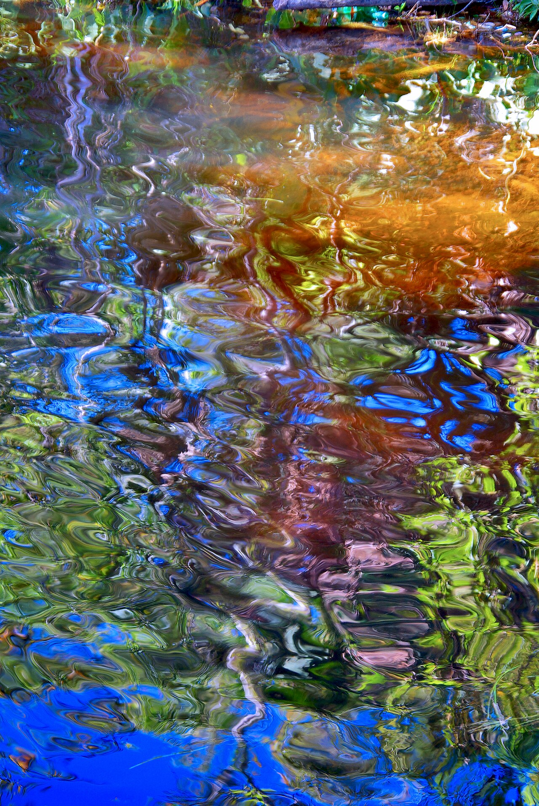
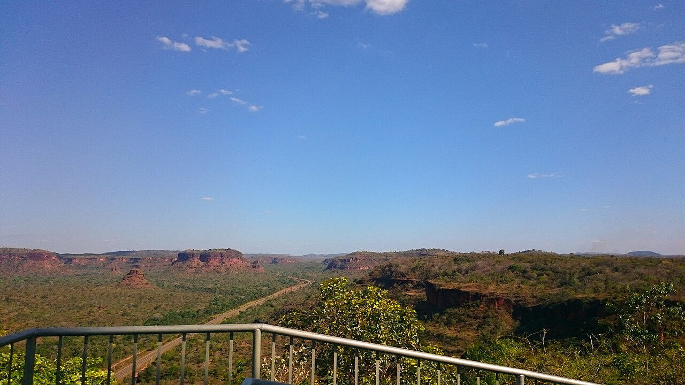
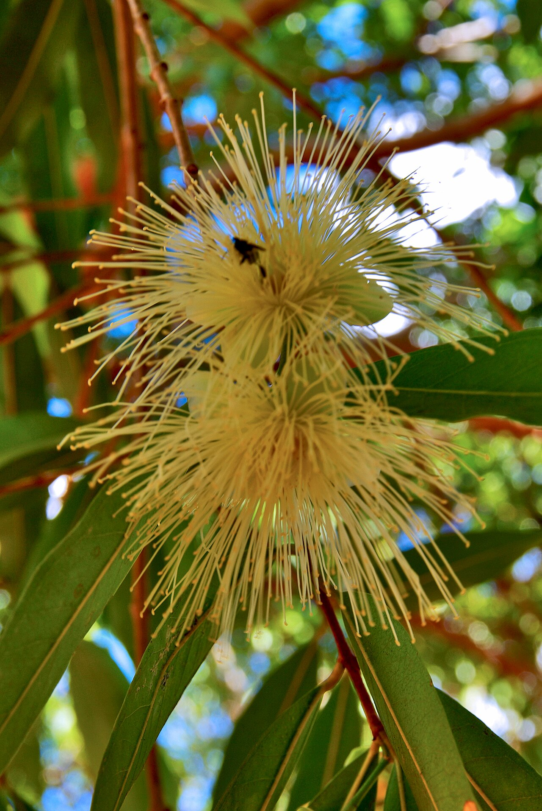
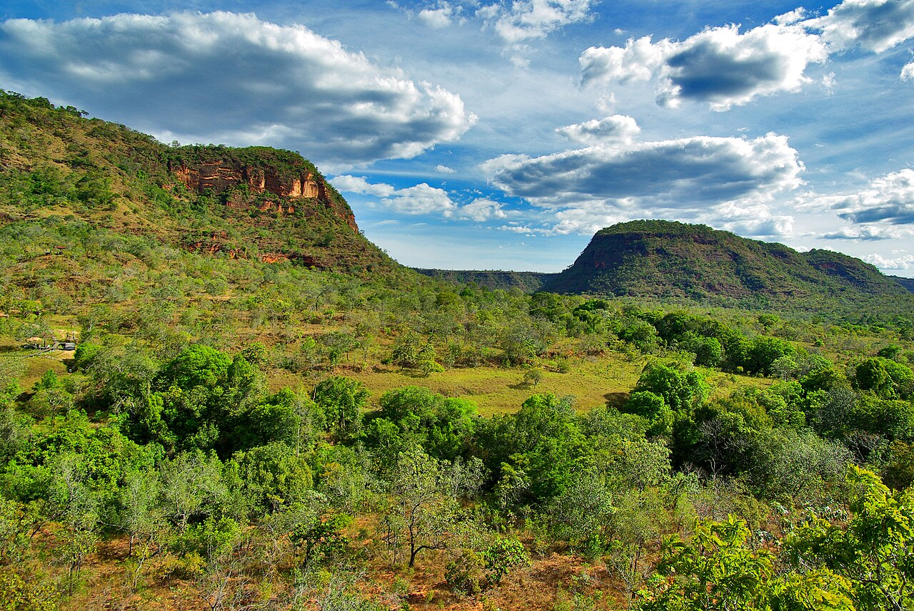
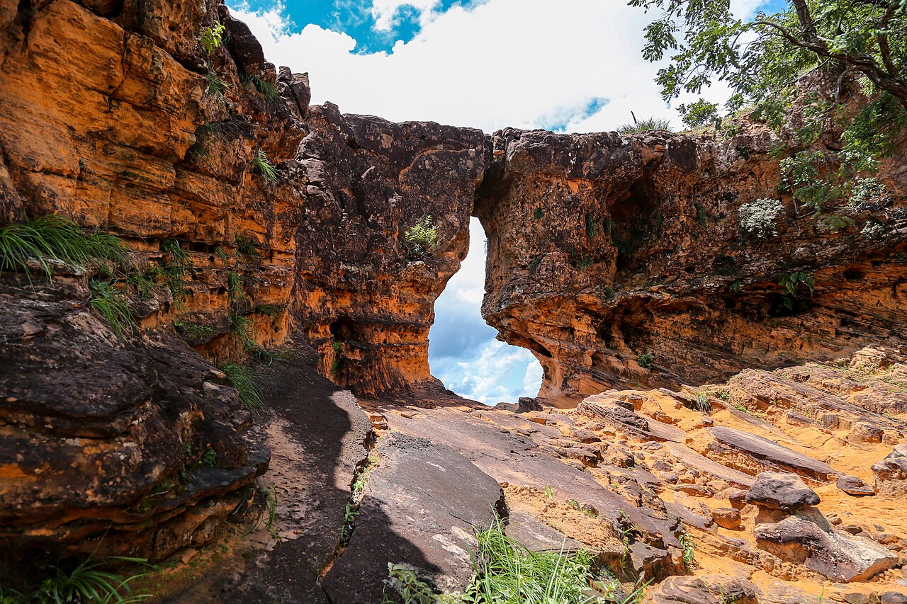

AVENTURA PELO MARANHÃO
Chapada das Mesas
Cachoeiras, formações rochosas e paisagens únicas em uma imersão pelo sul do Maranhão.
Conhecer esta experiência →A EXPERIÊNCIA
Entre cachoeiras, cânions e águas cristalinas.
Saindo de Imperatriz para Carolina, a experiência percorre cenários marcantes da Chapada das Mesas, com tempo para viver cada banho de cachoeira e cada trecho do caminho.
Roteiro sugerido
Cachoeiras Gêmeas do Itapecuru, Encanto Azul, Poço Azul, Cachoeira Santa Bárbara, Cânion do Cocal, Complexo Pedra Caída e Portal da Chapada das Mesas.
O que está incluso
- Transporte 4x4 durante a experiência
- Hospedagem com café da manhã
- Condutor credenciado, passeios e guia
- Taxas de entrada nos atrativos
O que não está incluso
- Aéreo e transfers de chegada e saída
- Almoço e jantar
- Despesas pessoais
Datas, duração e serviços podem variar conforme disponibilidade e composição da viagem. A confirmação acontece antes da reserva.
Pronto para viver a Chapada das Mesas?
Quero receber uma proposta →FOTOS DO DESTINO
O que espera por você




